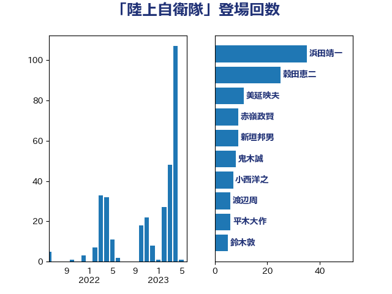

単語「陸上自衛隊」

| 浜田靖一 | 自由民主党 | 35 回 |
| 穀田恵二 | 日本共産党 | 25 回 |
| 美延映夫 | 日本維新の会 | 11 回 |
| 赤嶺政賢 | 日本共産党 | 9 回 |
| 新垣邦男 | 立憲民主党 | 9 回 |
| 鬼木誠 | 立憲民主党 | 8 回 |
| 小西洋之 | 立憲民主党 | 7 回 |
| 渡辺周 | 立憲民主党 | 6 回 |
| 平木大作 | 公明党 | 6 回 |
| 鈴木敦 | 国民民主党 | 5 回 |
| 松本尚 | 自由民主党 | 5 回 |
| 小野田紀美 | 自由民主党 | 5 回 |
| 小泉進次郎 | 自由民主党 | 5 回 |
| 井野俊郎 | 自由民主党 | 5 回 |
| 井上哲士 | 日本共産党 | 5 回 |
| 福山哲郎 | 立憲民主党 | 4 回 |
| 田村貴昭 | 日本共産党 | 4 回 |
| 小池晃 | 日本共産党 | 4 回 |
| 伊波洋一 | 無所属 | 4 回 |
| 羽田次郎 | 立憲民主党 | 3 回 |
| 櫻井周 | 立憲民主党 | 3 回 |
| 榛葉賀津也 | 国民民主党 | 3 回 |
| 岩谷良平 | 日本維新の会 | 3 回 |
| 山添拓 | 日本共産党 | 3 回 |
| 和田有一朗 | 日本維新の会 | 3 回 |
| 吉良よし子 | 日本共産党 | 3 回 |
| 高橋光男 | 公明党 | 2 回 |
| 馬淵澄夫 | 立憲民主党 | 2 回 |
| 金城泰邦 | 公明党 | 2 回 |
| 河西宏一 | 公明党 | 2 回 |
| 林芳正 | 自由民主党 | 2 回 |
| 宮本岳志 | 日本共産党 | 2 回 |
| 高良鉄美 | 無所属 | 1 回 |
| 高木かおり | 日本維新の会 | 1 回 |
| 長妻昭 | 立憲民主党 | 1 回 |
| 鈴木憲和 | 自由民主党 | 1 回 |
| 金子道仁 | 日本維新の会 | 1 回 |
| 重徳和彦 | 立憲民主党 | 1 回 |
| 道下大樹 | 立憲民主党 | 1 回 |
| 西村智奈美 | 立憲民主党 | 1 回 |
| 藤巻健太 | 日本維新の会 | 1 回 |
| 藤岡隆雄 | 立憲民主党 | 1 回 |
| 緒方林太郎 | 無所属 | 1 回 |
| 篠原豪 | 立憲民主党 | 1 回 |
| 浅田均 | 日本維新の会 | 1 回 |
| 浅川義治 | 日本維新の会 | 1 回 |
| 水野素子 | 立憲民主党 | 1 回 |
| 櫛渕万里 | れいわ新選組 | 1 回 |
| 松川るい | 自由民主党 | 1 回 |
| 木村次郎 | 自由民主党 | 1 回 |
| 早稲田ゆき | 立憲民主党 | 1 回 |
| 岸田文雄 | 自由民主党 | 1 回 |
| 小野寺五典 | 自由民主党 | 1 回 |
| 宮本徹 | 日本共産党 | 1 回 |
| 堀井巌 | 自由民主党 | 1 回 |
| 吉田宣弘 | 公明党 | 1 回 |
| 佐藤正久 | 自由民主党 | 1 回 |
| 伊藤俊輔 | 立憲民主党 | 1 回 |
| 三上えり | 立憲民主党 | 1 回 |
| 一谷勇一郎 | 日本維新の会 | 1 回 |